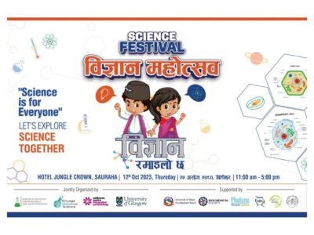
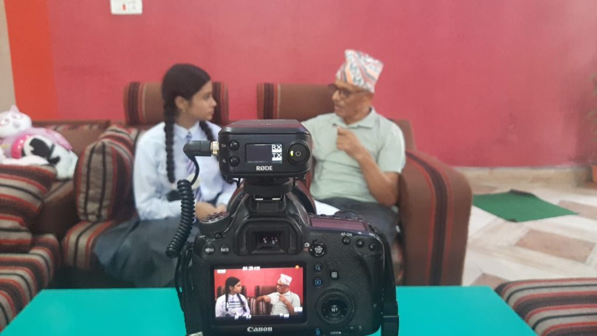
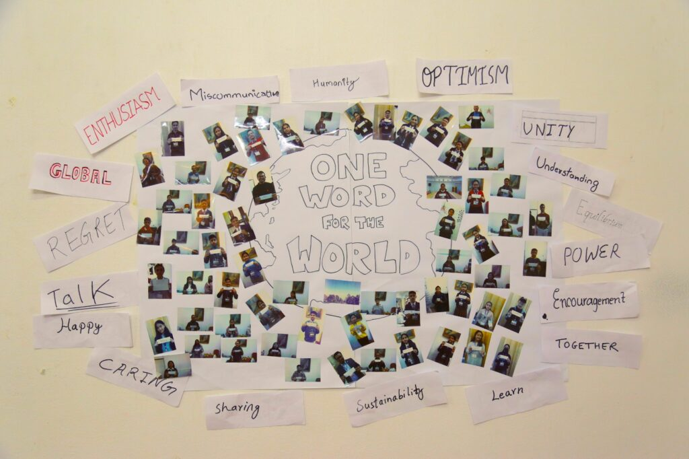
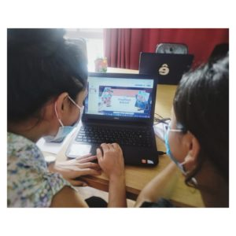

Science Festival
During October 2023 we organised our first Nepal Science week in the areas of Chitwan and Nawalparasi that ended with a Science Festival on the 12th of October. This program was a great collaboration between the Wellcome Centre for Integrative Parasitology (Glasgow), RIBB – Research Institute for Bioscience and Biotechnology , Phutung Research Institute and Kathmandu Research Institute for Biological Sciences
Green Detectives
Green Detectives is a graphic adventure in which students will become detectives that will go through tests/puzzles/quizzes on different topics (plant/animal evolution, landscape evolution/changes, water/rivers and social evolution) before they get to the final test: finding examples of climate change effects on evolution, photographing them and uploading them to the game.
Connecting the Climate Challenge
Started in March 2021, the Connecting the Climate Challenge program aims to raise awareness about climate change and inspire action to mitigate its effects.Connecting the Climate Challenge connects communities in Nepal and Scotland to share their different but complementary experiences to climate change and work together towards finding solutions to tackle the climate crisis using an interdisciplinary approach that includes digital technologies, science and art as platforms to educate, raise awareness and problem solve. Schools covering the main climatic areas of both Scotland and Nepal are the primary audience, as they act as excellent entry point to the wider community.
Gamification Tools In Learning and Education
On 16th July 2021, we organized a workshop in Kathmandu titled "Gamification Tools In Learning and Education". The workshop explored the use of game elements in educational settings to enhance learning.Gamification, or the incorporation of game elements into non-game settings, generate a great opportunity to experiment with rules, emotions, and social roles leading to increased motivation in the classroom, or during a learning process. Games provide complex systems of rules for players to explore through active experimentation and discovery. They guide players through the process and keep them engaged with potentially difficult tasks, while providing multiple routes to success and allowing These techniques, applied to schools or other educational centres, can transform the learning experience.
